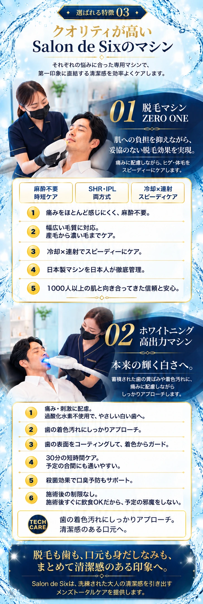
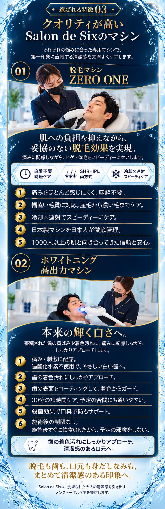
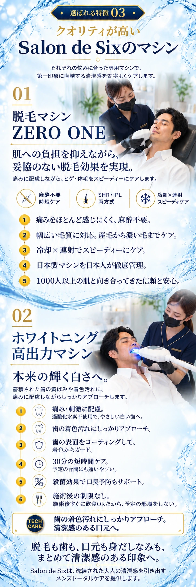

A｜写真を主役に整理 おすすめ
大きい施術写真から説明へつなぐ構成。既存LPの広告らしさを保ちながら、細かな枠の繰り返しを減らします。
画像をタップして拡大（別タブ）

B｜紺で高級感を強調
深い紺の一続きの面と、曲線でつなぐ施術写真。金の番号と区切り線で、専門性と高級感を伝えます。
画像をタップして拡大（別タブ）

C｜明るく爽やかに
枠を減らし、写真と大きな機械名、縦に続く番号で読ませる構成。爽やかさと文字の読みやすさを重視します。
画像をタップして拡大（別タブ）
